Do alfabeto à sintaxe exegética: um caminho integrado em cinco níveis com Rega/Mounce para morfologia e Wallace para sintaxe — mais métodos, gráficos, recursos e prompts.
Ἐν ἀρχῇ ἦν ὁ λόγος|בְּרֵאשִׁית בָּרֵא אֱלֹהִים
Introdução e propósito
Estudar o grego do Novo Testamento (koiné) é ganhar acesso direto a casos, aspecto e partículas que as traduções resumem. Este destino espelha a estrutura do hebraico: visão geral → 25 métodos → análise → ranking → gráficos → recursos → método vencedor → currículo → Anki → IA → dores.
1. Visão geral e estatísticas
Características estruturais do grego koiné (fatos de língua)
Aspecto
Descrição
Alfabeto
24 letras gregas; minúsculas e maiúsculas no manuscrito e nas edições modernas
Três vozes (ativo, médio, passivo) com padrões de conjugação e nuances de sentido
Aspecto
Sistema verbal por aspecto/perfeito (presente, imperfeito, aoristo, perfeito…) mais tempo morfológico
Artigo
Artigo definido πρόπεριο/τή/τό concordando em caso, número e gênero — chave sintática
Direção
Esquerda-para-direita; acentos polidrônicos preservados (οξεία, βαρεία, περισπωμένη) em citações
Estimativa editorial de esforço
≈ 56 semanas de rotina diária até leitura de períodos com Wallace à mão — não é estatística oficial
Fatos linguísticos + estimativa editorial do portal (setembro de 2026). Sem números de “falantes”, “taxas de sucesso” ou métricas fabricadas.
2. Métodos de aprendizado (25 métodos analisados)
Mesmo conjunto de 25 métodos reais, com aplicação adaptada ao grego koiné. Eficiência/complexidade/tempo = estimativas editoriais de setembro de 2026.
Explore pelos cartões (com barras comparativas) ou abra a tabela completa no fim da seção. Busca, filtros e ordenação agem sobre os 25 métodos e o resumo abaixo é recalculado sobre o que estiver visível.
3. Análise didática detalhada
Centradas no professor
Gramática–Tradução, Direto, Áudio-Lingual, Suggestopedia entregam paradigmas limpos e correção imediata — ideais para declinações e vozes verbais no início, insuficientes sozinhas para sintaxe exegética. Combine com leitura contínua de períodos paulinos.
Centradas no aluno
Anki, Coaching, Descoberta indutiva, Tradução inversa, TPR adaptado funcionam bem para autodidatas. Risco: “morte das categorias” sem prática de análise — antidoto é o ciclo traduzir → parsing → Wallace → nota.
Centradas no texto
Leitura direta/extensiva/estreita, Entrada compreensível, Ensino por conteúdo: leia uma epístola inteira antes de trocar de autor; use o interlinear só ao travar. O texto é o currículo.
4. Ranking de eficácia
5. Gráficos comparativos
Cinco leituras visuais: dispersão, radar (top 4), barras de tempo, comparação híbrido×tradicional e a síntese no infográfico — tudo derivado da tabela de 25 métodos, com resumo + tabela de dados.
5.1 Infográfico do plano

Cronologia estimativa editorial de setembro de 2026 — referenciais de estudo, não calendário oficial de editoras.
6. Recursos gratuitos
Sofia App — técnica, limpa, sem anúncios; Strong, GK, Louw-Nida.
Rega/Mounce respondem “O que é esta forma?” (morfologia nominal e verbal, semanas 1–20). Wallace responde “Por que importa teologicamente esta construção?” (sintaxe exegética, semana 21+).
Fluxo de trabalho passo a passo
Traduzir o período com Rega/Mounce abertos (significado primeiro);
Parsing completo das formas — casos, artigo, pessoa/tempo/aspecto;
Consultar Wallace na seção do fenômeno (caso, artigo, verbo);
Nota exegética de 3–5 linhas: o que a sintaxe sustenta / o que fica em aberto.
Repita o ciclo semanalmente em uma perícope; em 8 semanas você terá um caderno sintático próprio.
Checkpoint: análise sintática completa de um capítulo com aparato de referência.
Nível 5 · Manutenção
Fluência
Objetivos: leitura semanal de texto grego, revisão enxuta de Anki, co-mentoria exegética quinzenal.
Rotina semanal sugerida (estimativa editorial de setembro de 2026): seg–sex: 25 min leitura + 15 min Anki; sáb: 45 min de ciclo Wallace; dom: descanso ou leitura leve.
Cronograma semanal de exemplo (estimativa editorial de setembro de 2026 — adapte à sua rotina)
Carta de parsing: frente = forma no versículo; verso = lema + parsing completo + glosa.
Carta de caso: frase com caso alvo → “qual função este caso desempenha aqui?” (resposta com Wallace como referência).
Novas cartas: 15–20/dia no início; não misture vocabulário e paradigmas no mesmo dia se atrapalhar a retenção.
Imagens? Opcional para mnemônicas; o essencial é texto grego real nas duas faces.
13. Prompts de IA (copiáveis)
A IA pratica com você; não substitui leitura, léxico nem mentoria. Não use respostas de IA como citação acadêmica.
1. Tutor pessoal de grego koiné
Você é um tutor pessoal de grego koiné para um estudante brasileiro. Responda em português, mantenha o grego em caracteres originais com acentos, sinalize incertezas e nunca invente lemmas. Estruture cada resposta: (1) forma/letra em foco, (2) explicação curta, (3) exemplo do Novo Testamento, (4) 1 exercício para eu responder.
2. Analista de sintaxe e casos gregos (Daniel Wallace)
Atue como analista de sintaxe grega no espírito de D. B. Wallace (sem copiar texto literal de livros com direitos). Dado um período que eu colar: identifique casos, artigo, relativas e escolhas verbais; para cada item, (a) descreva a construção, (b) liste 2 leituras possíveis, (c) indique a seção CONCEITUAL de sintaxe que eu deveria reler, (d) diga o que precisa de confirmação humana. Não conclua dogmaticamente.
14. Dores comuns e checklist
Dores do estudante e antídoto
Dor
Antídoto
“Morte das categorias” (esqueci casos e vozes)
Drill cronometrado + cartas Anki de paradigma; sintaxe Wallace como aplicação viva das categorias
“Paradigmas que nunca saem da memória”
Repetição espaçada com frases reais, não listas soltas
“Traduzo palavra a palavra e perco o período”
Leitura da frase inteira primeiro; interlinear só depois; markup de partículas
“Wallace é denso demais”
Consultar sob demanda a partir do texto; nunca ler de capa a capa no início
“Grego do NT e LXX parecem mundos diferentes”
Boa base comum; introduzir LXX no nível 4 como leitura comparada (MT × LXX)
Checklist diária
Você ainda não aceitou os termos de uso desta página.